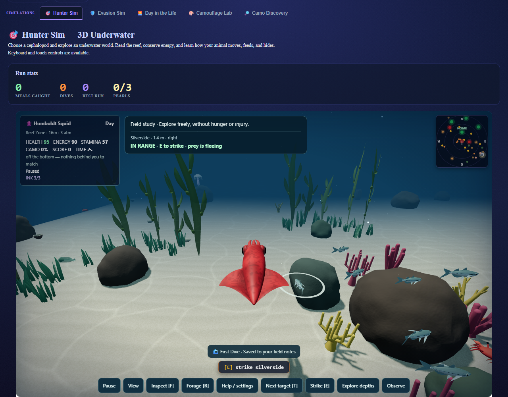
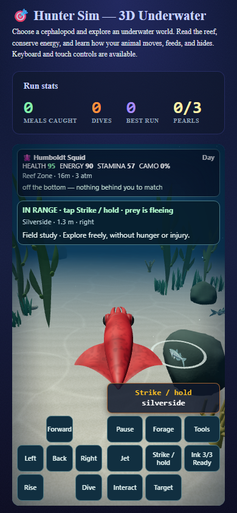

A more convincing silver shoal
Curved gill covers, restrained scale glints and a richer eye finish on the existing prey rig. Fine scales fade with their screen footprint. These paired diagnostics retain the same seeded fish, transforms, camera, bounds and original world lighting. Other mesh visibility is masked for inspection.
flank
head
distant
phone
In the dive

Desktop · native movement and jet inputs
Phone · low quality34 CPU cases and 9 distinct native browser cases verified. Eight passed initially; one mounting stall passed in a fresh isolated session with the same source and assertions. No added meshes, materials, textures or per-frame buffer changes. All changes remain uncommitted.